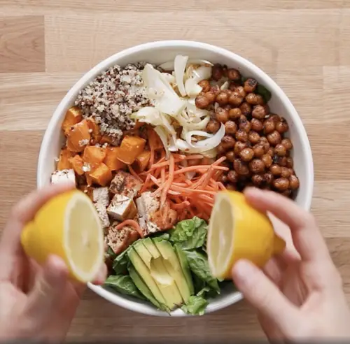

Buddha Bowls

Description
Whoever said vegetarians don't get enough protein must not have tried this Buddha bowl. Between the tofu and chickpeas there's more than enough protein to get you energized. And of course it tastes great too!
Bowl Ingredients
for 2 servings
- 8 oz firm tofu, drained
- 1 sweet potato, peeled and cubed
- 1 onion, sliced
- 2 cloves garlic, minced
- 1 tablespoon peanut or vegetable oil
- 1 cup chickpeas, drained
- 1/2 teaspoon salt, plus more to taste
- 1/2 teaspoon pepper, plus more to taste
- 1 teaspoon chili powder
- 1 teaspoon garlic powder
- 1 1/2 cups cooked quinoa
- 1 cup leafy greens, such as mesclun, baby kale, or spinach
- 1/4 cup shredded carrots, shredded
- 1 avocado, diced
- Juice of 1 lemon
Marinade Ingredients
- 2 tablespoons vegetable oil
- 1/2 teaspoon sesame oil
- 1 teaspoon hot sauce
- 2 teaspoons dried thyme
- 1 teaspoon paprika
- 1/2 teaspoon salt
Steps
- Make the marinade: In a small bowl, combine the vegetable oil, sesame oil, hot sauce, thyme, paprika, and salt. Set aside.
- Add the marinade and tofu to a container and marinate for at least 30 minutes, or up to a day.
- Preheat the oven to 400ºF (200ºC).
- Lay the sweet potato, onion, and garlic on a baking sheet and drizzle with oil. Season with salt and pepper. Bake for 20-25 minutes.
- In a medium bowl, add the chickpeas, salt, pepper, chili powder, and garlic powder to a bowl and stir to combine.
- Transfer chickpeas to a skillet and cook over medium heat for about 10 minutes. Set chickpeas aside.
- Fry the tofu in the same pan for about 10 minutes on each side.
- Slice tofu to your preference.
- Combine the quinoa, greens, sweet potatoes, onions, chickpeas, carrots, tofu, and avocado in a medium-large bowl and top off with lemon juice
- Enjoy!
More Odin Recipes